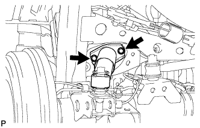
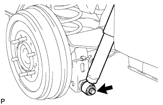

BỘ GIẢM CHẤN PHÍA SAU > LẮP |
| 1. LẮP BỘ GIẢM CHẤN PHÍA SAU |
|  |
Lắp 3 hãm, 2 vòng đệm, giá bắt và một đai ốc hãm mới vào bộ giảm chấn.
Lắp bộ giảm chấn vào khung xe bằng 2 bu lông.
| 2. LẮP TẠM THỜI CỤM GIẢM CHẤN SAU |
|  |
Lắp 2 bạc mới và 2 cái hãm vào bộ giảm chấn.
Lắp tạm bộ giảm chấn vào vỏ cầu xe bằng đai ốc.
| 3. LẮP BÁNH XE SAU |
| 4. ỔN ĐỊNH HỆ THỐNG TREO |
Hạ thấp xe.
Hãy nhún xe vài lần để ổn định hệ thống treo.
| 5. XIẾT CHẶT BU LÔNG BỘ GIẢM CHẤN PHÍA SAU |
Xiết chặt bulông.